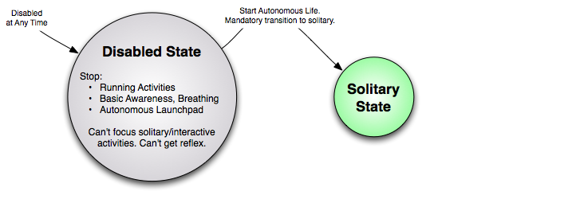

ALAutonomousLife - Advanced¶
NAOqi Core - Overview | API | Launch trigger conditions | Advanced
Autonomous Life states¶
ALAutonomousLife states exist for prioritization and automation of starting activities and other services.
List of Autonomous Life states¶
| State name | For further details, see ... |
|---|---|
| “solitary” | Solitary state |
| “interactive” | Interactive state |
| “disabled” | Disabled state |
| “safeguard” | Safeguard state |
Solitary state¶

Solitary state is entered from any state:
| From ... | Solitary state is entered ... |
|---|---|
| disabled | programmatically. |
| interactive | when interactive Activity stack finished. |
| safeguard | when safeguard successfully processed. |
| solitary | when a solitary Activity finished. |
When this state is entered:
- Basic Awareness and Breathing services are started and parameters reset.
- Autonomous Launchpad is started.
- Only plugins for “solitary” group are enabled by default.
During this state:
- Any activity can be started via ALAutonomousLifeProxy::switchFocus().
- Starting interactive Activity will switch to interactive state.
- The safeguard and disabled states may be entered.
- Autonomous Launchpad can not be stopped, and its suggested activities will be automatically focused, potentially interrupting running Activity.
Launchpad Activity prioritization:
- If a solitary and interactive both have true conditions at the same time, interactive will get priority.
- When multiple activities have true conditions at the same time, the one that was focused least recently will get priority.
- During a solitary Activity, an interactive Activity may interrupt it to take the focus.
- A solitary Activity will not be interrupted another solitary Activity (this behavior could change in the future)
Interactive state¶
Interactive state is only entered:
- when an Interactive Activity is focused.
When this state is entered:
- Basic Awareness and Breathing services will be started and parameters reset.
- Autonomous Launchpad will be stopped.
During this state:
- Interactive activities can be started via
ALAutonomousLifeProxy::switchFocus()
- Focusing a new interactive Activity will re-enter the interactive state.
- Solitary activities may not be started, this would cause the solitary state to enforce its rules and create a bad life cycle with the user. (This could change in the future)
- The safeguard and disabled state may be entered.
- Autonomous Launchpad can be started, it will not enforce focusing its suggestions. It will not interrupt the running Activity.
- When an entire stack of interactive activities has exited, solitary state will be entered.
- When all humans have been lost, the interactive Activity will be forcibly exited. (This is not yet implemented)
Disabled state¶
When this state is entered:
- Focused Activity will be stopped and stack cleared.
- Basic Awareness and Breathing services will be stopped if they are running.
- Autonomous Launchpad. will be stopped.
During this state:
- No Activity can be started via ALAutonomousLifeProxy::switchFocus()
- Autonomous Launchpad can not be started.
- The safeguard or interactive state may not be entered.
To exit this state:
- the developer may call ALAutonomousLifeProxy::setState()
- This action will be provided in a default startup behavior where desired.
Safeguard state¶
Safeguard state is entered when:
- A critical reflex raised.
- The developer should not enter this state. Entering this state is reserved for critical Aldebaran code.
- A critical reflex is raised when ALBodyTemperature sees that a critical joint is too hot to function, or if ALDiagnosis sees that critical hardware is not functioning properly, as defined in Level of failure severity.
When this state is entered:
- Focused Activity is stopped and stack cleared.
- Basic Awareness and Breathing services are stopped if they are running.
- Autonomous Launchpad is stopped.
- The reflex is then processed.
- Based on the outcome of the reflex, the solitary state may be re-entered.
- For damaged hardware, the robot does not exit safeguard state.
- For overheating, the robot exits the safeguard state after cooling down sufficiently.
During this state:
- No Activity can be started via ALAutonomousLifeProxy::switchFocus()
- Autonomous Launchpad can not be started.
- The safeguard state may be re-entered for a higher priority reflex.